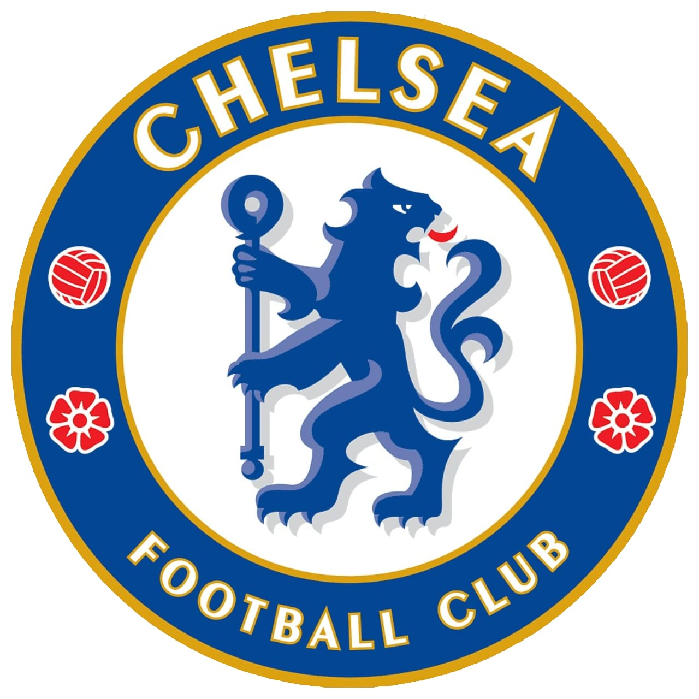
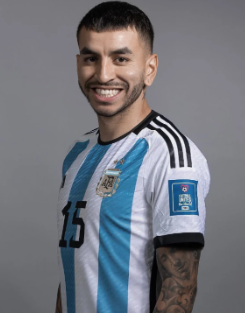

La copa América es el primer torneo de carácter continental de la historia del fútbol;
su primera edición data en el año 1916, es decir, en los años previos a la era profesional de
este deporte. En aquella oportunidad el primer campeón fue Uruguay .
La Copa America 2024 es la edición número 48 de este prestigioso torneo en el que dicen
presente las selecciones sudamericanas como también países del centro y del norte del continente,
alli destaca Estados Unidos, ya que es el país anfitrión.
| Seleccion | Capitan | Copas Ganadas |
|---|---|---|
| Argentina | Messi | 15 |
| Bolivia | Haquín | 1 |
| Brasil | Vinicius Jr | 9 |
| Canadá | Hutchinson | 0 |
| Chile | Bravo | 2 |
| Colombia | Rodriguez | 1 |
| Costa Rica | Calvo | 0 |
| Ecuador | Galíndez | 0 |
| Estados Unidos | Pulsic | 0 |
| Jamaica | Blake | 0 |
| México | Álvarez | 0 |
| Panamá | Godoy | 0 |
| Paraguay | Almirón | 2 |
| Perú | Lapadula | 2 |
| Uruguay | Valverde | 15 |
| Venezuela | Rincón | 0 |
El ganador de la Copa América es, a su vez, finalista por una copa intercontinental contra el ganador de la Eurocopa.
Este último, mantiene la misma lógica que la americana, pero con los países del viejo continente.
Esta copa consiste en un partido único para definir al gran vencedor.
La Copa de Campeones Conmebol-UEFA 2022, o por su nombre comercial Finalissima 2022, fue la tercera
edición del torneo, de la cual, Argentina salió victoriosa al imponerse contra la selección italiana,
terminando el encuentro con un marcador 3 a 0.
| Grupo A | Grupo B | Grupo C | Grupo D | ||||
|---|---|---|---|---|---|---|---|
| Argentina | México | Estados Unidos | Brasil | ||||
| Perú | Ecuador | Uruguay | Colombia | ||||
| Chile | Venezuela | Panamá | Paraguay | ||||
| Canadá | Jamaica | Bolivia | Costa Rica |


Argentina, en su calidad de actual campeón de la Copa América, dará inicio al nuevo torneo del 2024
con su primer partido el próximo 20 de junio. A continuación, se presenta la lista de jugadores convocados para la copa:
| Convocados de la Seleccion Argentina Copa América 2024 | ||||
|---|---|---|---|---|
| Jugador | Posición | N° | Clubes | |
 | Lionel Messi | Delantero | 10 |  |
 | Emiliano Martinez | Arquero | 23 | |
 | Franco Armani | Arquero | 1 |  |
 | Gerónimo Rulli | Arquero | 12 |  |
 | Nahuel Molina | Defensor | 26 |  |
 | Gonzalo Montiel | Defensor | 4 |  |
 | Cristian Romero | Defensor | 13 |  |
 | German Pezzela | Defensor | 6 |  |
 | Nicolás Otamendi | Defensor | 19 |  |
 | Lisandro Martinez | Defensor | 25 |  |
 | Marcos Acuña | Defensor | 8 |   |
 | Nicolás Tagliafico | Defensor | 3 |  |
 | Ángel Di Maria | Delantero | 11 |  |
 | Lautaro Martinez | Delantero | 22 |  |
 | Julián Alvarez | Delantero | 9 | |
 | Nicolás González | Delantero | 15 |  |
 | Rodrigo De Paul | Volante | 7 | |
 | Leandro Paredes | Volante | 5 |  |
 | Alexis Mac Allister | Volante | 20 |  |
 | Guido Rodriguez | Volante | 18 | |
 | Enzo Fernandez | Volante | 24 |  |
 | Exequiel Palacios | Volante | 14 | |
| Leonardo Balerdi | Defensor | - | ||
 | Lucas Martinez Quarta | Defensor | 2 | |
| Valentin Barco | Defensor | - | ||
| Valentin Carboni | Delantero | - | ||
|  | Ángel Correa | Delantero | 21 | |
 | Alejandro Garnacho | Delantero | 17 | |
 | Giovani Lo Celso | Volante | 16 | |
Argentina y Uruguay son los máximos ganadores con 15 copas cada uno.
El vigente campeón del mundo alcanzó el récord uruguayo al haber conquistado el último torneo continental.


¿Será que en ésta edición se de el caso de un nuevo máximo ganador de la Copa América?